Where Indigenous Wisdom Meets Future Innovation
At Wolfgramm Holdings, we apply hybrid Human-Centered Design (HCD) & Heutagogy strategies that combine Indigenous innovation with practical problem-solving.
Each approach is tailored to the realities of non-Māori organisations, beginning with a deeper understanding of your people's needs, behaviours, and contexts to create solutions that genuinely resonate.
Our programmes are also guided by a Māori social services lens — embedded, relational, and aligned with your commercial imperatives. By training your trainers and your people, we ensure ROI is measurable and maximised, balancing cultural desirability with business viability.
What We Offer
We work across multiple sectors to deliver customised culturally grounded transformation. Our services span five core areas — each grounded in Māori knowledge, relational integrity, and future-focused practice.
Indigenous Tourism
Experience Indigenous culture through a full-day immersive journey at a traditional tribal meeting ground in Auckland. Designed for groups and conference delegates, it offers authentic connection through ceremony, storytelling, and hands-on cultural engagement
Relational Engagement for Non Māori Organisations
Te Tiriti education, cultural readiness assessments, and tailored workshops to embed equity, understanding, and responsiveness into your team.
A.I Adoption
We help businesses boost operational efficiency by adopting AI. We automate repetitive and soul crushing tasks. We can customise and build digital confidence through practical workshops and tailored implementation support
Leadership & Wellbeing
Twelve-week programmes and wellbeing strategies that build culturally grounded, resilient leaders aligned with Indigenous values.
Indigenous Systems Designer
We help PHD researchers and providers embed tikanga into research and practice through onboarding, workshops, and co-designed Memorandum of Understanding.
Trusted by Organisations Across Aotearoa
Wolfgramm Holdings has worked alongside industry leaders, councils, researchers, SMEs, and cultural organisations to embed meaningful change. Whether it's through leadership development, Treaty training, or AI innovation. Our kaupapa is built on trust, responsiveness, and results.
 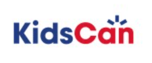
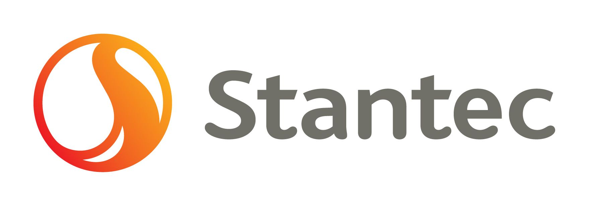
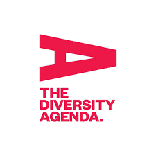
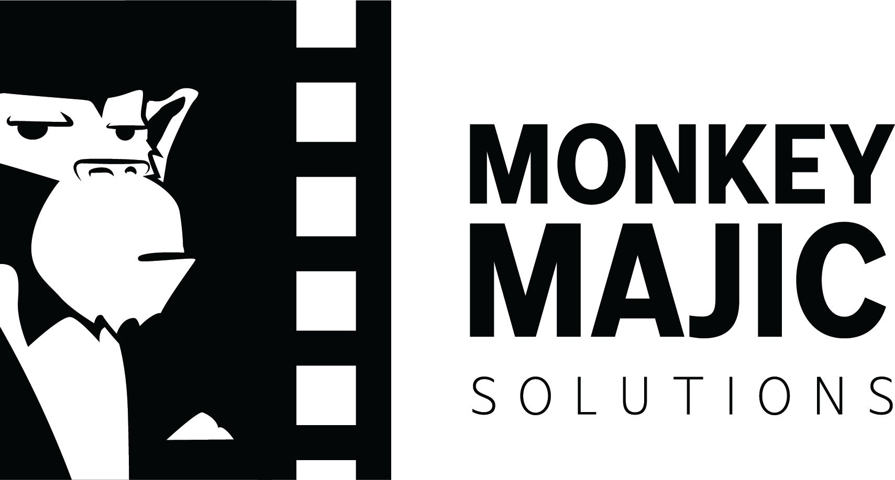
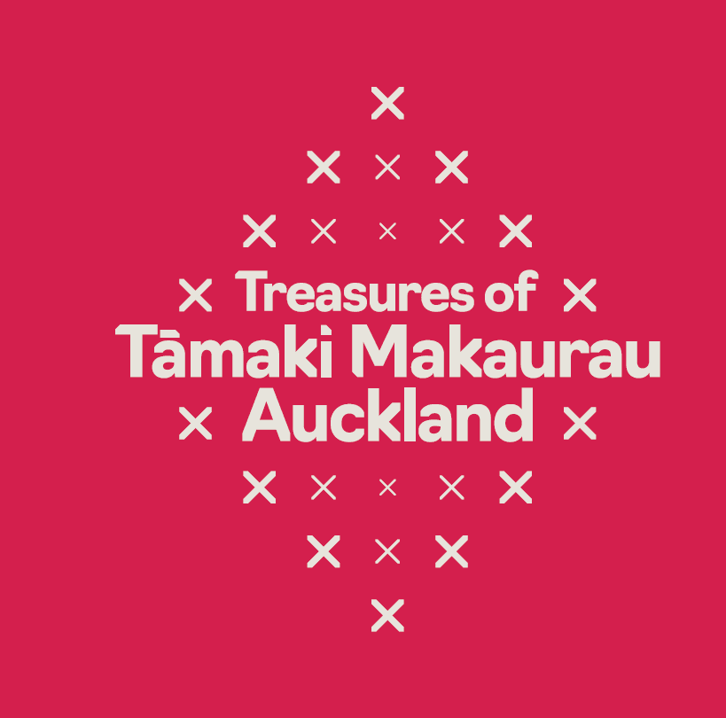
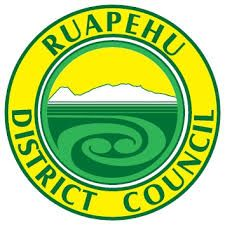
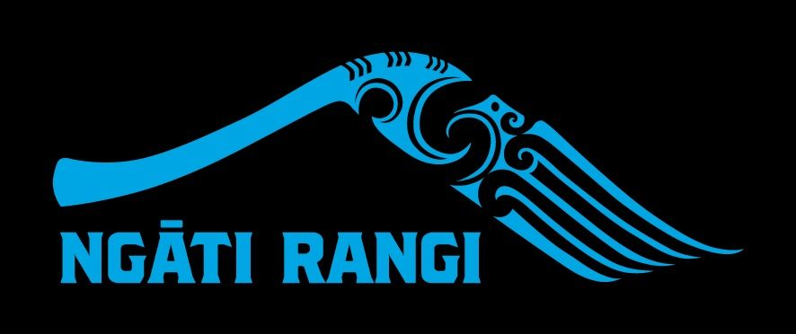
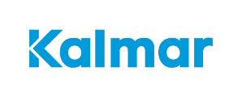
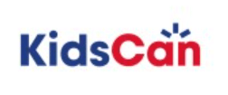
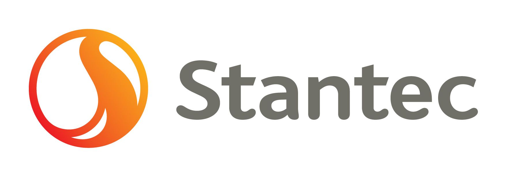
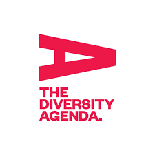
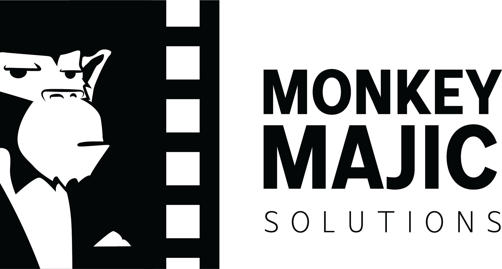
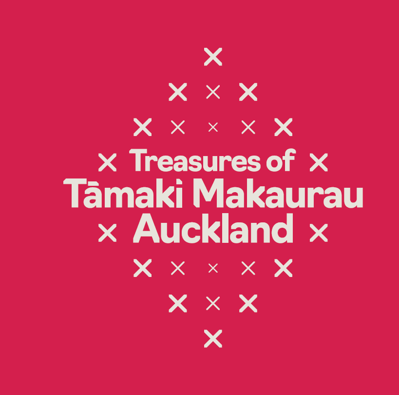
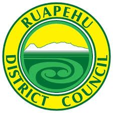
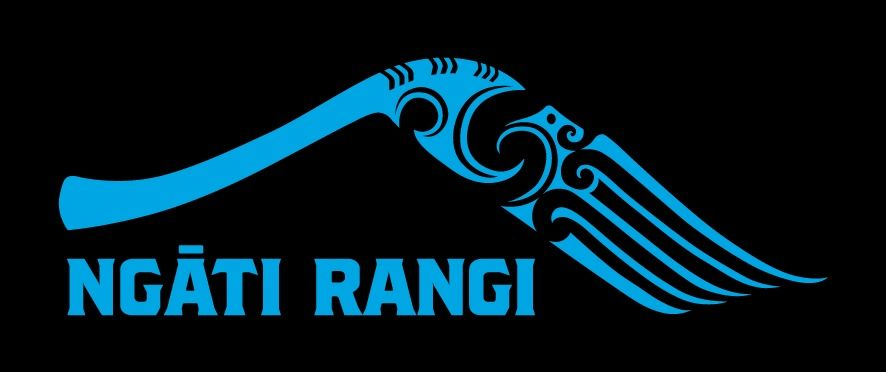
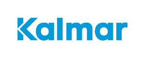
Led by Experience. Grounded in Tikanga. Driven by Impact.
Wolfgramm Holdings is powered by a whānau of educators, strategists, technologists, cultural advisors, and relational leaders. We bring together diverse skills, unified by a commitment to transformative change rooted in kaupapa Māori. We don't just deliver workshops, we help shift worldviews, build trust, and guide long-term growth across business, research, and public life.
Our Story
Let's Co-Design What Comes Next
Whether you're ready to integrate AI, deepen your organisation's Treaty responsiveness, strengthen leadership and wellbeing, or build cultural partnerships, our team is here to walk alongside you. We start by listening, mapping your goals, and crafting a plan grounded in kaupapa Māori, not generic templates.
Book a Free Strategy SessionFrequently Asked Questions About Our Workshops and Programmes
What is marae-based cultural training?
A workshop experience grounded in Māori cultural settings, using ceremony, stories, and hands-on learning to build authentic inclusion.
What can my organisation learn from Wolfgramm Holdings' Māori cultural engagement workshops?
Our workshops provide non-Māori organisations with practical knowledge to build cultural confidence.
Session 1 introduces tikanga, kawa, hui, and pepeha.
Session 2 prepares teams for pōwhiri and whakatau, exploring both formal and informal welcomes and their business relevance.
Session 3 focuses on Mana Motuhake (self-determination), unpacking its cultural meaning and how SMEs can apply it in practice.
Together, these sessions help organisations engage respectfully, strengthen relationships, and embed Māori values into daily operations.
Who should attend Te Tiriti o Waitangi and the Treaty and the Integrity of Water workshops?
These workshops are designed for leaders, teams, and organisations that want to deepen their understanding of Te Tiriti o Waitangi and its application in today's workplaces and communities.
The Treaty and the Integrity of Water workshops are especially valuable for professionals working in infrastructure, environmental management, policy, and community engagement who need to integrate cultural values and responsibilities into their decision-making.
Do you deliver workshops online or in-person?
We offer both: in-person at marae and workplaces, and virtual sessions via secure online platforms.
How long are the programmes?
Workshops range 90 minute online sessions to half-day and full-day, while leadership and wellbeing programmes run over 12 weeks.
How can I book a session with Wolfgramm Holdings?
You can book by emailing info@wgholdings.co.nz